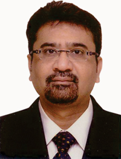

DR. DINKAR VIRPARIA

MD (Radiology) CONSULTANT RADIO-SONOLOGIST - CT SCAN MRI EXPERT (SINCE 1991)
BRIEF INTRODUCTION
Passed his M.B.B.S from B.J. Medical College, Ahmedabad in 1985 passed his M.D. (Radiology) from M.P. Shah Medical Hospital and Gujarat Cancer and Research Institute Ahmedabad in 1989 (Stood 2nd in the Gujarat University)
Intense Experience During Research Fellowship In X.Rays, Sonography, Mammography And C T Scan At M. P. Shah Cancer Hospital, Ahmedabad.
AT PRESENT
Running Sonex Imaging Centre Successfully Since 1991 With Ultra Modern Facilities Like Digital X.Ray To C T Scan And M R I.
ATTACHED TO
Radiologist To L I C Of India.
Director Abhishek Critical Care Unit Pvt Ltd
Director Rajkot Imaging Centre (Milestone Imaging Pvt Ltd).
SERVED AS AN HONARARY RADIOLOGIST AT
Rajkot Cancer Hospital, Rajkot
Rajkot Railway Hospital, Rajkot
H. J. Doshi Hospital, Rajkot
Prabhat C T Scan Centre, Rajkot
Accurate C T Scan, Junagadh
C J General Hospital, Surendranagar